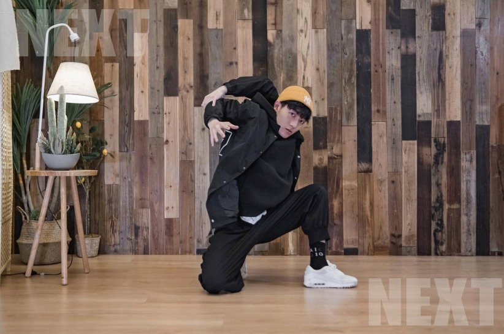
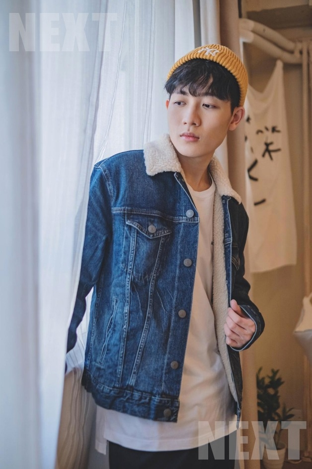
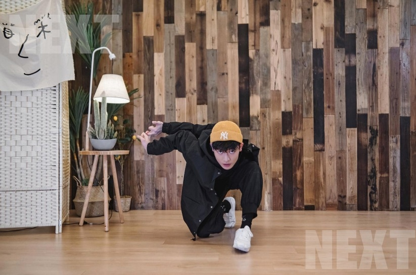
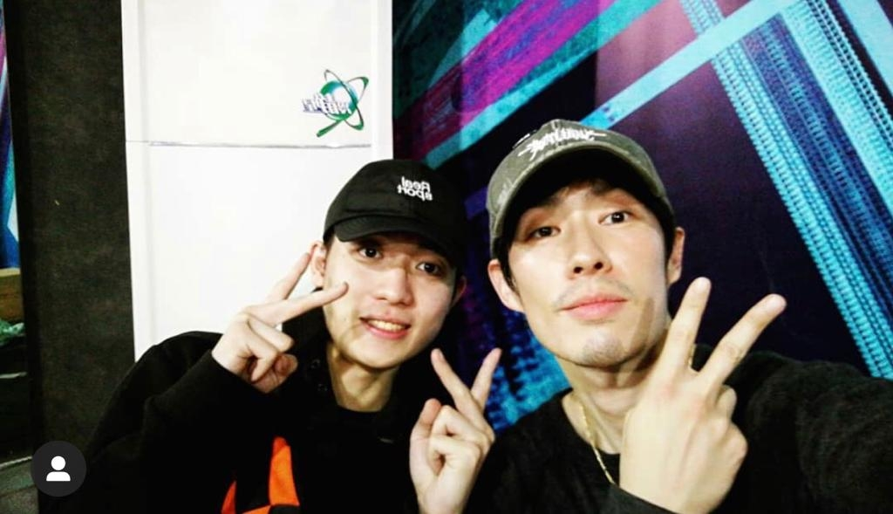
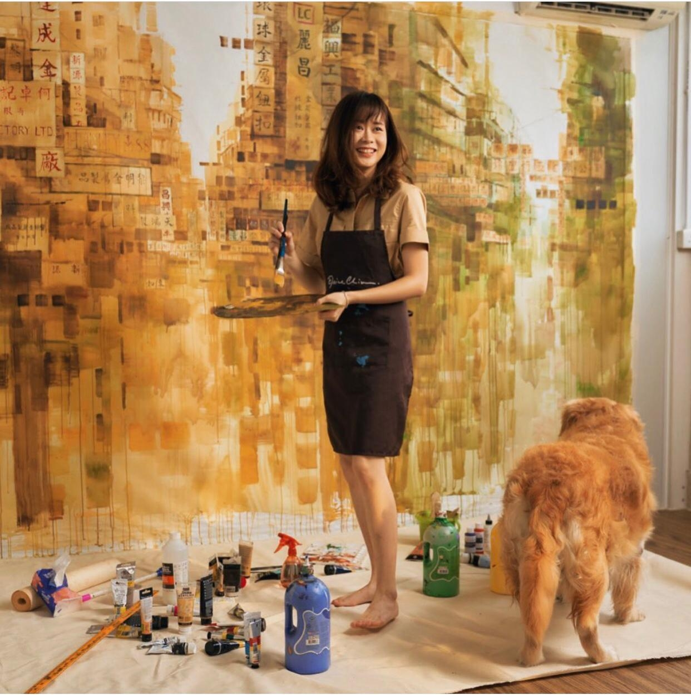

自小不出眾
ViuTV選秀節目《全民造星III》冠軍，終由原本花姐眼中唔睇好，但一路憑驚人的折骨舞功震懾評判，網民勁like的阿Ben(趙祥誠)勝出。在母親獨力照顧五姊弟妹中，排行第二的他，自覺讀書不成，並不出眾 ，亦因此缺乏自信，故當晚宣佈他贏了冠軍一刻，Ben一臉疑惑，似不相信自己會成為No.1！
他的舞技，曾經在別人眼中，認為是無前途的專長，他在節目中說:「人哋話跳呢啲舞，唔可以行到好遠。」現在他證明，折骨舞可以吐氣揚眉。
「我覺得跳舞唔一定只係企喺歌手後面，我好想做到香港第一個，以跳舞為主嘅藝人。」23歲，你做到了！
- 一直冇自信的Ben，宣佈成為冠軍一刻，他一臉猶豫，似不相信自己是勝利者。
 - Ben的柔軟功力，在後台觀看的ERROR成員肥仔都話:「喺香港識得跳折骨舞嘅人寥寥可數，Ben更加係最厲害嗰位！」
要將折骨舞在本地發揚光大
睇返Ben當日面試的片段，怕羞兼對答閃縮，給人感覺一個內斂又沒自信男孩，那時誰想到，他是打低49位對手最後稱冠的人。
每次阿Ben出場，都令觀眾包括評判嘩聲四起，深怕跳折骨舞的人，真會骨折一樣的緊張。Ben的柔軟功力，在後台觀看的ERROR成員肥仔都話:「喺香港識得跳折骨舞嘅人寥寥可數，Ben更加係最厲害嗰位！」
確實他一上台 ，就變成另一個人，音樂奏起，Ben的眼神變得堅定，身體每個關節跳到如拆開一樣，觀眾越尖叫，他越起勁。
十七歲開始，他就睇YouTube鑽研跳舞，跳了五年，不甘平凡，決定學一門絕招，要成為舞者焦點。
「啱啱開始學跳舞時係自學形式，然後學popping機械舞，我好鍾意表演，覺得表演需要有視覺效果，觀眾先有反應，所以好想練一啲絕招。然後不斷喺網上搵不同跳舞招式，直至有一日，見到一位黑人喺美國《全美一叮》節目上嘅表演，正正係我好想做嘅嘢，係可以令全場觀眾尖叫，對方表演嘅技能，就係我而家做緊嘅嗰件事！」他說。
Ben的折骨舞，跳到開班授徒，希望將這種舞藝傳授開去，在本土發揚光大。
「有一個小班教學經驗，同埋之前曾經有人搵我去社區中心講解呢種舞，因為想大家知道跳街舞，唔係淨係用頭喺地下轉，或者淨係機械舞，街舞其實仲有好多範疇，都係好好睇，而且跳舞唔一定只係企喺歌手後面，呢個時代，我覺得任何事情都可以發生，喺外國已經有好多好成功嘅例子，以跳舞成名，同歌手、明星一樣睇齊，會有自己特色同形象，所以我好想做到香港第一個，以跳舞為主嘅藝人。」
 - 自覺求學時並不出眾的他，缺乏自信，唯進入舞蹈世界，才找到想發光的自己。
初學練習時㩒定999
跳到將身體每個關節如拆開一樣，Ben 話人人都可以做到，但當然要經過勤力苦練，尤其拉筋練習。初學時，他試過手機按定三條9，預咗隨時練到骨折求救。
「有啲人嘅筋骨天生好鬆軟，我可能比一般人係鬆少少，但都一定要靠後天不斷苦練先可以做到。我第一次練習嘅時候，唔識得點樣正確拉筋，然後想嘗試將兩隻手扣住，再拉向後面，好似跳繩咁樣。第一次做嘅時候已經成功拉向後面，但痛咗半個鐘。」幸而練習以來未試過甩骹，唔使call 999送院。
 - 初學時，他說雖一學成功，但筋骨痛了半個鐘，且搞笑是初期練習時，總㩒定999，怕萬一骨折受傷，隨時求救送院。
跳到吳建豪睇中
《造星》前，Ben已經常出國參加各類舞蹈交流，早幾年他在內地綜藝節目《這！就是街舞第二季》，就以招牌折骨舞加入吳建豪隊！
「其實係我唯一一位跟隨咗好耐嘅老師，帶我去內地表演，因為佢覺得跳呢種舞嘅人，喺香港甚至大陸都好少，所以就帶我參加內地呢個節目，佢唔想我練咗呢種舞咁耐，好似收埋無俾人睇到。」
有了內地出賽經驗，當畫家，又開過個人畫展嘅家姐趙綺婷，提議Ben參加《全民造星》，希望細佬的藝術天份，獲得本地賞識認同。
「由第一、二季嘅時候，家姐、屋企人甚至朋友都已經好想我參加，但當時我仲係一個好無自信、無勇氣嘅人。直至家姐再一次提議我今年參加，我覺得反正今年疫情無工作，不如就趁呢個機會試下，其實唔只係嘗試，而係想改變一下自己。」
他最想改變，是社交關係，及遇困難就會選擇逃避的劣性。
「本身比較慢熱，又鍾意收埋自己，《造星》去到中段時間，我先至識到一班朋友。最初參加比賽時，覺得其他人都好似明星，都已經準備好，無論性格上或者其他方面，佢哋都好適合做呢一行。但我唔係，覺得自己要180度極速轉變去適應，而且好多嘢要面對，換轉以前我係會逃避，但當時要焗住面對好多嘢，包括自己性格上嘅缺點，例如對住好多人就會出現緊張，都要一下子全部攞走晒，所以真係好刺激。」正式成為跳舞藝人，面對的人和事，「做星」之旅，比起「造星」階段，有心理準備會更刺激！
 - 曾經北上參加內地比賽節目，憑中港少見的折骨舞藝，被吳建豪睇中，歸入他率領的隊伍。
 - 家境富裕的Ben，有位被稱為城市畫家，開個畫展的家姐趙綺婷，亦是她的鼓勵，令Ben踏入改變的旅程。